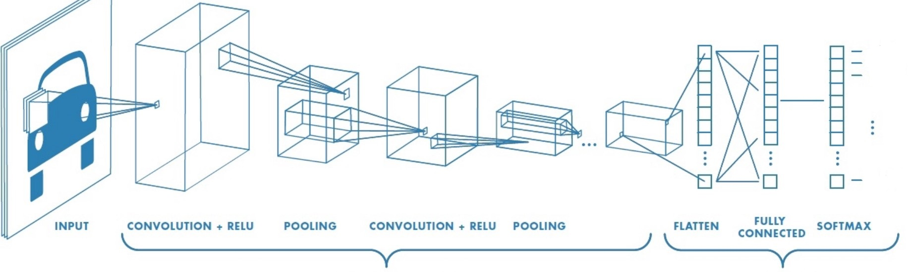
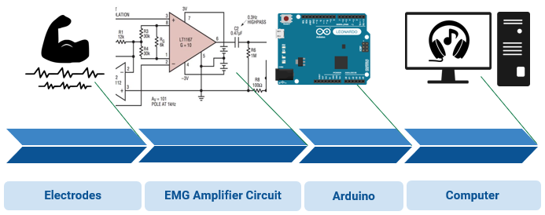

Distracted Driving
June 2019
Created an iOS app using Computer Vision with a team that identifies whether a driver is engaging in distracted driving. A convolutional neural network was built in PyTorch to recognize distracted actions, such as texting, talking to a passenger, doing hair and makeup, etc.

Worked on the backend signal processing of an EMG device that converts electrical
signals from muscle activity into music. Numerical methods were implemented with Python to produce unique musical notes as midi files in real-time.

Bridge Deterioration Model
September 2018

Modeled the deterioration of bridge elements in varying environments to optimize budget allocation for the maintenance of bridges across Illinois. Discrete density functions were created from historical data sets and transformed into stochastic matrices to create deterioration curves. This project was presented at PYGHack 2018 and received an honorable mention from the Illinois Department of Transportation. Language used was Python.
Disease Detector
Feburary 2018 - March 2018

For Engineering Open House 2018 at the University of Illinois at Urbana-Champaign, I lead a team of three to develop an Android application called Disease Detector. This application mines through Twitter to find tweets that contain keywords related to sickness symptoms. Then the data is organized to be displayed on a marker map and a heat map.
Each marker on the marker map is placed at the exact location where someone tweeted about their sickness. Clicking on a marker opens up an info window that displays information about the tweet: the username, keywords extracted, and date tweeted. The heat map aggregates the data into a distribution of colors representing the level of sickness activity in an area.